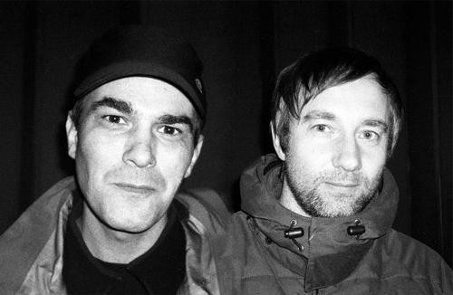

The album title names repetition three times over, yet the music fractures every expected grid. Autechre began programming their own drum machines and sequencers, resisting the quantized pulse. Dael is precise and broken at the same time.
Geometric forms generated by a broken rhythm, shapes that should repeat but don't quite. Frequency irregularities produce visual displacement. The pattern is always nearly there.
Rhythmic structures that drift from their own internal grid. Complex logic generates patterns that feel both inevitable and arbitrary, the machine discovering its own tendencies through sustained iteration.
Tri Repetae sits at a turning point in the duo's catalogue, the moment abstraction became the subject rather than the method. Beats that fold into themselves, textures that resist easy description.
Sean Booth and Rob Brown have consistently refused genre definition, building instead a private language of rhythm and signal. Each release extends that language without explaining it.
To listen to Autechre is to enter a system whose rules become apparent only gradually, if at all. The pleasure is in sustained attention.